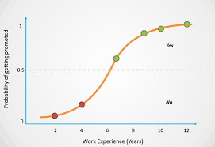

Artificial Intelligence & Machine Learning
Artificial intelligence covers any process that allows the mincing of human decision-making by computers. Machine learning and deep learning both have tremendous amounts of development in the healthcare sectors. Generally speaking, machine learning and deep learning involve the use of mathematical processes and equations for model building. These models are in turn used in the prediction or stimulation of a future event. These techniques have been around for a long time, such as stochastic gradient descent, a technique used by both ML and deep learning that was used in research in the early 50s. But all these mathematical calculations have one drawback, they are all very computationally intensive involving multiplication of matrices with increased workload with the number of independent variables involved increasing (IBM, AI). It often requires huge computational power with the processing power of a mainframe computer in the '90s and early 2000s. All this changed with the introduction of the Nvidia GPU computation system in the CUDA unit (Nvidia, 2021) and this system came with its programmable language TensorFlow in Python. Python, an object-oriented open source language promotes the rapid development of deep learning in all fields including medical research. Nowadays, an undergraduate computer science student can use his one thousand euro gaming PC at home to run his own Python deep learning program with an open source library such as Pytorch ready available (TensorFlow). Even undergraduates from all areas from engineering to health sciences could be able to use and adapt complex maths equations to create models for their own needs. Two main research areas in healthcare involving A.I. and M.L. with rapid development are assisting imaging diagnosis and analysis of health data (McKinsey).

Python, an object-oriented open source language promotes the rapid development of deep learning in all fields including medical research. Nowadays, an undergraduate computer science student can use his one thousand euro gaming PC at home to run his own Python deep learning program with an open source library such as Pytorch ready available. Even undergraduates from all areas from engineering to health sciences could be able to use and adapt complex maths equations to create models for their own needs. Two main research areas in healthcare involving A.I. and M.L. with rapid development are assisting imaging diagnosis and analysis of health data. There is huge progress in the A.I. assisting image analysis and diagnosis. Manufacturers of most image machinery are providing A.I. software to analyse images using deep learning algorithms. Another major effect of A.I. and machine learning is in Health data analytics. There is much medical research related to health data analysis using M.L. and A.I. done by researchers in Ireland and abroad, Amazon Web Services AWS offers several services to create a machine learning framework. One of the key services is Amazon SageMaker, which is a fully managed platform that enables developers and data scientists to build, train, and deploy machine learning models at scale. With SageMaker, users can easily access machine learning algorithms, utilize pre-built development environments, and deploy models with minimal effort. Additionally, SageMaker provides capabilities for data labeling, model tuning, and monitoring, making it a comprehensive solution for machine learning development and deployment on AWS infrastructure.

Diagram shows Convolutional Neural Networks (CNN) by Nikolaj Buhl NCNN, or Convolutional Neural Network, is a type of deep learning algorithm inspired by the organization of the animal visual cortex. It's particularly well-suited for image recognition tasks. CNNs consist of multiple layers, including convolutional layers, pooling layers, and fully connected layers. Convolutional layers apply filters to input images, detecting features like edges and textures. Pooling layers reduce the dimensionality of feature maps, preserving important information.
Diagram shows Logistic Regression by Selvaraj Logistic regression/ classification is a statistical model used for binary classification tasks, where the outcome variable has two possible outcomes. It predicts the probability that a given input belongs to one of the two classes. Unlike linear regression, which predicts continuous values, logistic regression applies a logistic function to the output of a linear combination of input features, transforming it into a probability score between 0 and 1. The model is trained using a method called maximum likelihood estimation, which adjusts the coefficients of the input features to minimize the difference between predicted probabilities and actual class labels. Logistic regression is widely used in various fields, including finance, healthcare, and marketing, due to its simplicity, interpretability, and effectiveness for binary classification tasks.